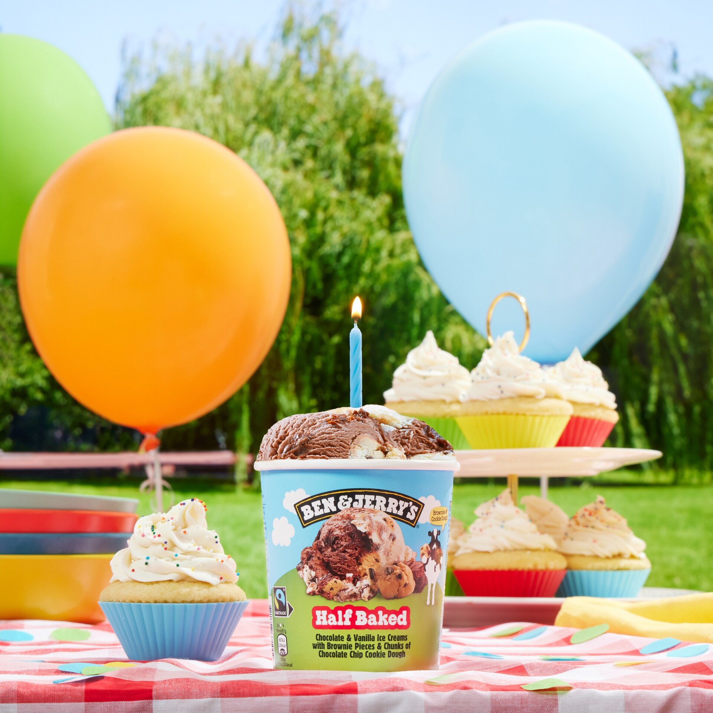

17 oktober 2025
17 oktober 2025
The Flavour Graveyard: Honouring our Dearly De-Pinted (Retired) Flavours
We’ve created a lot of euphoric flavours over the years, but for better or worse, some of them have moved on to the great waffle cone in the sky: our Flavour Graveyard.
Meer lezen

1 mei 2025
QUIZ: Celebrate Our Birthday With 10 Trivia Questions
Break out the balloons, it’s our birthday! Here’s a birthday challenge for you: Can you answer 10 trivia questions about your favorite ice cream makers? Give it a go!
Meer lezen
 22 april 2025
22 april 2025
Iemand helpen is toch geen misdrijf? Bescherm solidariteit in Europa!
Europese politici willen hulp aan nieuwkomers bestraffen. Kom in actie!
Meer lezen